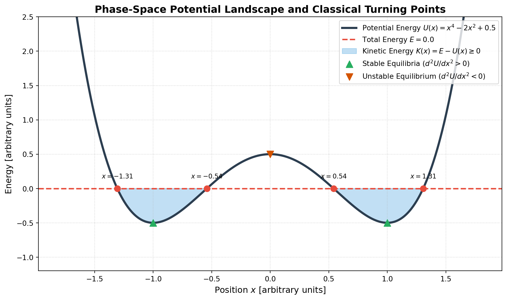

Energy: Fundamentals, Conservation Laws, and Reference Frame Invariance
A rigorous mathematical exploration of kinetic and potential energy, the work-energy theorem, gauge freedom in potential origins, and the Galilean relativity of energy conservation.
Physics
Mechanics
Classical Mechanics
Energy
Author
Igor Kan
Published
September 8, 2026
In classical physics, few concepts are as ubiquitous or deeply misunderstood as energy. We often recite that “energy cannot be created or destroyed,” yet we rarely examine the subtle mathematical machinery underneath: Why is kinetic energy quadratic in velocity? How can energy be conserved in all inertial frames if kinetic energy itself changes from frame to frame? What physical freedom do we have when choosing our coordinate origins and reference zeroes?
This article provides a rigorous, first-principles exploration of energy in classical mechanics, bridging Newtonian dynamics, analytical mechanics, coordinate transformations, and practical problem-solving.
1. The Genesis of Energy: Work and the Work-Energy Theorem
The concept of kinetic energy did not begin with Newton’s Principia, but with Gottfried Wilhelm Leibniz, who championed the quantity \(m v^2\) (which he called vis viva, or “living force”). The modern factor of \(\frac{1}{2}\) was introduced decades later by Gaspard-Gustave de Coriolis in 1829 to directly align kinetic energy with mechanical work.
Derivation from Newton’s Second Law
Consider a particle of mass \(m\) moving along a smooth curve \(\mathbf{r}(t)\) under the influence of a net force \(\mathbf{F}\). Newton’s second law states: \[\mathbf{F} = m \frac{d\mathbf{v}}{dt}\]
The infinitesimal work \(dW\) performed by this force over a displacement \(d\mathbf{r} = \mathbf{v} \, dt\) is the line integral: \[W_{1 \to 2} = \int_{\mathbf{r}_1}^{\mathbf{r}_2} \mathbf{F} \cdot d\mathbf{r}\]
Using the vector identity \(\frac{d}{dt} (\mathbf{v} \cdot \mathbf{v}) = 2 \mathbf{v} \cdot \frac{d\mathbf{v}}{dt}\), we rewrite the integrand: \[W_{1 \to 2} = \frac{1}{2} m \int_{t_1}^{t_2} \frac{d}{dt} (v^2) \, dt = \left[ \frac{1}{2} m v^2 \right]_{t_1}^{t_2} = K_2 - K_1 = \Delta K\]
This is the fundamental Work-Kinetic Energy Theorem: \[\boxed{W_{\text{net}} = \Delta K}\]
Rotational and Relativistic Generalizations
Rotational Kinetic Energy: For a rigid body rotating about an axis with angular velocity \(\boldsymbol{\omega}\), summing the kinetic energies of each constituent mass element \(dm\) yields: \[K_{\text{rot}} = \frac{1}{2} \boldsymbol{\omega}^T \mathbf{I} \boldsymbol{\omega}\] where \(\mathbf{I}\) is the rank-2 moment of inertia tensor. If rotating about a principal axis with scalar moment \(I\), this simplifies to \(K_{\text{rot}} = \frac{1}{2} I \omega^2\).
Relativistic Kinetic Energy: In special relativity, Newton’s linear momentum is modified by the Lorentz factor \(\gamma = 1/\sqrt{1 - v^2/c^2}\). Integrating \(W = \int \mathbf{v} \cdot d\mathbf{p}\) yields: \[K_{\text{rel}} = (\gamma - 1) m c^2 = \sqrt{p^2 c^2 + m^2 c^4} - m c^2\] In the low-velocity limit (\(v \ll c\)), a binomial Taylor series expansion demonstrates how the classical formula emerges: \[K_{\text{rel}} = m c^2 \left( 1 + \frac{1}{2} \frac{v^2}{c^2} + \frac{3}{8} \frac{v^4}{c^4} + \dots - 1 \right) = \frac{1}{2} m v^2 + \frac{3}{8} m \frac{v^4}{c^2} + \mathcal{O}\left(\frac{v^6}{c^4}\right)\]
2. Conservative Forces and Potential Energy
Not all forces allow the concept of potential energy. Potential energy \(U(\mathbf{r})\) is only defined for conservative forces.
Mathematical Criteria for a Conservative Force
A force \(\mathbf{F}(\mathbf{r})\) is conservative if and only if any of the following four equivalent statements hold: 1. The work done along any closed curve is identically zero: \(\oint \mathbf{F} \cdot d\mathbf{r} = 0\). 2. The work done moving between points \(A\) and \(B\) is independent of the path taken. 3. The curl of the force field vanishes everywhere: \(\boldsymbol{\nabla} \times \mathbf{F} = \mathbf{0}\) (in a simply connected domain). 4. The force can be written as the negative gradient of a single-valued scalar function \(U(\mathbf{r})\): \[\boxed{\mathbf{F} = -\boldsymbol{\nabla} U}\]
When a force is conservative, the work done by that force as the particle moves from \(\mathbf{r}_1\) to \(\mathbf{r}_2\) is: \[W_c = \int_{\mathbf{r}_1}^{\mathbf{r}_2} (-\boldsymbol{\nabla} U) \cdot d\mathbf{r} = - \int_{\mathbf{r}_1}^{\mathbf{r}_2} dU = -(U_2 - U_1) = -\Delta U\]
Combining this with the Work-Energy Theorem (\(W_c + W_{\text{nc}} = \Delta K\)): \[-\Delta U + W_{\text{nc}} = \Delta K \implies \Delta(K + U) = W_{\text{nc}}\]
When non-conservative forces (like friction or drag) do no work (\(W_{\text{nc}} = 0\)), the total mechanical energy \(E = K + U\) is an invariant constant of motion: \[\boxed{E = K + U = \text{constant}}\]
3. Coordinate Systems and the Gauge Freedom of Potential Energy
One of the most practical questions in physics is: Where should we place the origin, and does it change the physics?
The Arbitrary Additive Constant (Gauge Freedom)
Potential energy is fundamentally defined as an integral: \[U(\mathbf{r}) = -\int_{\mathbf{r}_0}^{\mathbf{r}} \mathbf{F} \cdot d\mathbf{r}' + U_0\]
Here, \(\mathbf{r}_0\) is an arbitrary reference position, and \(U_0 = U(\mathbf{r}_0)\) is an arbitrary assigned value. If we shift this reference zero by an arbitrary constant \(C\): \[U'(\mathbf{r}) = U(\mathbf{r}) + C\]
Physical observables are completely invariant under this shift: 1. Forces are unchanged:\(\mathbf{F}' = -\boldsymbol{\nabla}(U + C) = -\boldsymbol{\nabla} U = \mathbf{F}\). 2. Work and energy changes are unchanged:\(\Delta U' = (U_2 + C) - (U_1 + C) = \Delta U\). 3. Equations of motion are unchanged: In Lagrangian mechanics, the Euler-Lagrange equations depend only on \(\partial L / \partial q = -\partial U / \partial q\), eliminating \(C\).
Coordinate Origin Selection Strategy
Local Problems (Flat Earth): Choosing \(z=0\) at ground level, table level, or the lowest point of an oscillation eliminates negative signs and makes algebra easier.
Central Force Problems (Planets, Atoms): Setting \(U=0\) at infinity (\(r \to \infty\)) is the natural choice because the interaction force drops to zero as bodies separate. As a direct consequence, all gravitationally or electrostatically bound orbits have negative total mechanical energy (\(E < 0\)). An object must have \(E \ge 0\) to escape to infinity.
A frequent point of confusion is how to construct \(U\) when the coordinate axis is inverted—for example, choosing a coordinate \(y\) that measures depth downwards from the ceiling, a cliff, or a table edge.
Always return to the definition via the line integral: \[U(y) - U(y_0) = -\int_{y_0}^y F_y(y') \, dy'\]
Case 1: Standard Convention (\(y\) Points UP, Origin at Ground)
Direction of Gravity: Points downwards \(\implies \mathbf{F}_g = -mg \hat{\mathbf{y}}\), so \(F_y = -mg\).
Physical Meaning: As the object drops deeper (increasing \(y\)), its potential energy becomes increasingly negative (\(U = -mgy\)). The change when falling from \(y_1\) to \(y_2 > y_1\) is \(\Delta U = -mg(y_2 - y_1) < 0\). By energy conservation \(\Delta K = -\Delta U = +mg(y_2 - y_1) > 0\), the kinetic energy correctly increases!
Case 3: Shifted Origin with Arbitrary Reference Height
Suppose a pendulum or mass hangs below a ceiling at \(z = H\), and we define \(y\) pointing downward as distance below the ceiling (\(y = H - z\)): * If we choose \(U = 0\) at the ground (\(z = 0 \iff y = H\)): \[U(y) = mgz = mg(H - y)\] * If we choose \(U = 0\) at the ceiling (\(y = 0\)): \[U(y) = -mgy\] * Notice that \(mg(H - y) = -mgy + mgH\). The two potentials differ only by the constant \(C = mgH\). Because forces and dynamics depend exclusively on \(-\frac{dU}{dy} = +mg\), both choices yield the exact same physical trajectory.
4. The Influence of Reference Frames: Galilean Invariance
While potential energy differences \(\Delta U\) depend only on the relative separation \(|\mathbf{r}_1 - \mathbf{r}_2|\) (which is identical in all frames), kinetic energy is inherently frame-dependent.
How Kinetic Energy Transforms Between Inertial Frames
Consider an inertial reference frame \(S\) and another inertial frame \(S'\) translating with a constant relative velocity \(\mathbf{V}\).
Now compute the kinetic energy of a single particle in frame \(S'\): \[K' = \frac{1}{2} m (\mathbf{v}')^2 = \frac{1}{2} m (\mathbf{v} - \mathbf{V}) \cdot (\mathbf{v} - \mathbf{V})\]\[K' = \frac{1}{2} m v^2 - m \mathbf{v} \cdot \mathbf{V} + \frac{1}{2} m V^2\]\[\boxed{K' = K - \mathbf{p} \cdot \mathbf{V} + \frac{1}{2} m V^2}\]
Kinetic energy is not invariant under Galilean boosts. A passenger sitting motionless on a high-speed train has \(K = 0\) in the train’s frame, but \(K = \frac{1}{2} m V_{\text{train}}^2\) to an observer on the platform.
Resolving the Paradox: Why Energy Conservation Still Holds
If \(K\) changes depending on who looks at it, how can energy conservation be a universal law across all inertial observers?
For an isolated system of \(N\) interacting particles, the total kinetic energy in \(S'\) is: \[K_{\text{total}}' = \sum_{i=1}^N K_i' = \sum_{i=1}^N K_i - \left( \sum_{i=1}^N m_i \mathbf{v}_i \right) \cdot \mathbf{V} + \frac{1}{2} \left( \sum_{i=1}^N m_i \right) V^2\]\[K_{\text{total}}' = K_{\text{total}} - \mathbf{P}_{\text{total}} \cdot \mathbf{V} + \frac{1}{2} M_{\text{total}} V^2\]
Now consider an interaction (such as an elastic collision, an explosion, or a gravitational slingshot) where the internal state changes from state \(1\) to state \(2\): \[\Delta K_{\text{total}}' = \Delta K_{\text{total}} - (\Delta \mathbf{P}_{\text{total}}) \cdot \mathbf{V}\]
Because the system is isolated, Newton’s third law guarantees conservation of total linear momentum: \(\Delta \mathbf{P}_{\text{total}} = \mathbf{0}\). Therefore: \[\boxed{\Delta K_{\text{total}}' = \Delta K_{\text{total}}}\]
Because distances between particles are invariant (\(|\mathbf{r}_i - \mathbf{r}_j| = |\mathbf{r}_i' - \mathbf{r}_j'|\)), the internal potential energy is identical in both frames: \(\Delta U' = \Delta U\). Consequently: \[\Delta E' = \Delta K' + \Delta U' = \Delta K + \Delta U = \Delta E = 0\]
Conclusion: Although different inertial observers disagree on the numerical value of the total energy, they all agree precisely on the conservation of total energy (\(\Delta E = 0\)).
König’s Theorem
This separation is formalized by König’s Theorem, which partitions the total kinetic energy of any multi-body system into two distinct parts: \[K_{\text{total}} = K_{\text{CM}} + K_{\text{internal}}\] * \(K_{\text{CM}} = \frac{1}{2} M_{\text{total}} V_{\text{CM}}^2\) is the kinetic energy associated with the bulk translation of the center of mass. * \(K_{\text{internal}} = \frac{1}{2} \sum m_i (\mathbf{v}_i - \mathbf{V}_{\text{CM}})^2\) is the kinetic energy of motion relative to the center of mass (e.g., thermal vibrations, rotation).
Only \(K_{\text{CM}}\) changes when shifting inertial frames; \(K_{\text{internal}}\) is a Galilean invariant.
Energy in Non-Inertial Reference Frames
When transforming to an accelerating or rotating reference frame, fictitious forces enter Newton’s second law: 1. Linearly Accelerating Frame (\(\mathbf{A}\)): The inertial force \(\mathbf{F}_{\text{inertial}} = -m\mathbf{A}\) is conservative if \(\mathbf{A}\) is uniform, yielding an effective potential energy \(U_{\text{inertial}} = m \mathbf{A} \cdot \mathbf{r}'\). 2. Rotating Frame (\(\boldsymbol{\omega}\)): * The Centrifugal Force\(\mathbf{F}_{\text{cf}} = -m \boldsymbol{\omega} \times (\boldsymbol{\omega} \times \mathbf{r}') = m \omega^2 \mathbf{r}_\perp\) has an associated potential energy: \[U_{\text{cf}} = -\frac{1}{2} m \omega^2 r_\perp^2\] * The Coriolis Force\(\mathbf{F}_{\text{cor}} = -2m (\boldsymbol{\omega} \times \mathbf{v}')\) acts perpendicular to velocity (\(\mathbf{F}_{\text{cor}} \cdot \mathbf{v}' = 0\)). Hence, the Coriolis force does zero work and contributes no potential energy.
5. Potential Energy Diagrams, Equilibrium, and Small Oscillations
In one-dimensional systems, graphing \(U(x)\) against position unlocks immediate qualitative and quantitative insights without having to solve the differential equations of motion directly.
Code
import numpy as npimport matplotlib.pyplot as plt# Define a double-well quartic potential: U(x) = x^4 - 2x^2 + 0.5x = np.linspace(-1.8, 1.8, 500)U = x**4-2*x**2+0.5# Chosen total mechanical energy EE =0.0fig, ax = plt.subplots(figsize=(10, 6))# Plot potential energy curveax.plot(x, U, color='#2c3e50', lw=3, label=r'Potential Energy $U(x) = x^4 - 2x^2 + 0.5$')# Plot Total Energy lineax.axhline(E, color='#e74c3c', lw=2, linestyle='--', label=r'Total Energy $E = 0.0$')# Identify classically allowed regions where E >= U(x)allowed_mask = E >= U# Shade Kinetic Energy K(x) = E - U(x)ax.fill_between(x, U, E, where=allowed_mask, color='#3498db', alpha=0.3, label=r'Kinetic Energy $K(x) = E - U(x)\geq 0$')# Mark turning points where E = U(x) (roots of x^4 - 2x^2 + 0.5 = 0)# Let u = x^2 => u^2 - 2u + 0.5 = 0 => u = 1 +- sqrt(1 - 0.5) = 1 +- sqrt(0.5)roots_sq = [1- np.sqrt(0.5), 1+ np.sqrt(0.5)]x_turns = [-np.sqrt(roots_sq[1]), -np.sqrt(roots_sq[0]), np.sqrt(roots_sq[0]), np.sqrt(roots_sq[1])]for xt in x_turns: ax.scatter(xt, E, color='#e74c3c', s=70, zorder=5) ax.annotate(f'$x = {xt:.2f}$', (xt, E +0.15), ha='center', fontsize=9, fontweight='bold')# Mark equilibria: dU/dx = 4x^3 - 4x = 4x(x^2 - 1) = 0 => x = -1, 0, 1# x = +-1: minima (stable)ax.scatter([-1, 1], [-0.5, -0.5], color='#27ae60', s=90, zorder=5, marker='^', label=r'Stable Equilibria ($d^2U/dx^2 > 0$)')# x = 0: maximum (unstable)ax.scatter([0], [0.5], color='#d35400', s=90, zorder=5, marker='v', label=r'Unstable Equilibrium ($d^2U/dx^2 < 0$)')ax.set_title(r'Phase-Space Potential Landscape and Classical Turning Points', fontsize=14, fontweight='bold')ax.set_xlabel('Position $x$ [arbitrary units]', fontsize=12)ax.set_ylabel('Energy [arbitrary units]', fontsize=12)ax.set_ylim(-1.2, 2.5)ax.grid(True, linestyle=':', alpha=0.6)ax.legend(loc='upper right', frameon=True)plt.tight_layout()plt.show()

Figure 1: Analysis of a 1D potential energy well showing turning points, kinetic energy, and stable/unstable equilibria.
Key Principles from Potential Well Topography
Velocity and Turning Points: Because kinetic energy cannot be negative (\(K = \frac{1}{2}mv^2 \ge 0\)), a classical particle is confined to regions where \(E \ge U(x)\). The points where \(E = U(x)\) are the classical turning points; at these points, \(v = 0\) and the particle reverses direction.
Equilibrium States:
Equilibrium Condition:\(\frac{dU}{dx} = 0 \iff F = 0\).
Stable Equilibrium:\(\frac{d^2U}{dx^2} > 0\) (a local minimum; restoring force pushes the particle back toward equilibrium).
Unstable Equilibrium:\(\frac{d^2U}{dx^2} < 0\) (a local maximum; disturbing force accelerates the particle away).
Small Oscillations Around Equilibrium: Taylor expanding \(U(x)\) around a stable minimum \(x_0\): \[U(x) = U(x_0) + \underbrace{U'(x_0)(x - x_0)}_{= 0} + \frac{1}{2} U''(x_0)(x - x_0)^2 + \mathcal{O}((x - x_0)^3)\] Near the bottom of any potential well, the potential is approximately quadratic (Hookean): \[F(x) = -\frac{dU}{dx} \approx -U''(x_0)(x - x_0) = -k_{\text{eff}} (x - x_0)\] Therefore, every stable physical system undergoes Simple Harmonic Motion for sufficiently small perturbations, with angular frequency: \[\omega = \sqrt{\frac{k_{\text{eff}}}{m}} = \sqrt{\frac{U''(x_0)}{m}}\]
6. Classic Benchmark Problems
Problem 1: The Loop-the-Loop Roller Coaster
Problem: A small roller coaster car of mass \(m\) starts from rest at height \(h\) and enters a vertical loop of radius \(R\). What is the minimum height \(h_{\text{min}}\) such that the car completes the loop without losing contact with the track at the apex?
Solution: At the apex of the loop (height \(z = 2R\)), two downward forces act on the car: gravity \(mg\) and the normal force \(N\) from the track. Newton’s second law for uniform circular motion requires: \[N + mg = \frac{m v_{\text{top}}^2}{R}\]
To maintain contact with the track, the normal force must remain non-negative (\(N \ge 0\)). At the critical threshold where \(N = 0\): \[v_{\text{top, min}}^2 = gR\]
Now apply conservation of total mechanical energy between the release point (\(z = h, v = 0\)) and the apex (\(z = 2R, v = v_{\text{top}}\)): \[E_{\text{initial}} = E_{\text{apex}}\]\[mgh + 0 = mg(2R) + \frac{1}{2} m v_{\text{top}}^2\]\[gh = 2gR + \frac{1}{2} (gR) = \frac{5}{2} gR \implies \boxed{h_{\text{min}} = \frac{5}{2} R}\]
Problem 2: Work on an Accelerating Train (Frame Dependence)
Problem: A train of mass \(M\) moves forward on flat tracks at constant velocity \(V\). A passenger of mass \(m\) stands inside and begins walking forward, accelerating from rest relative to the train up to a speed \(u\). Compute the work done and kinetic energy change in both: 1. The train’s frame \(S_{\text{train}}\) 2. The track’s ground frame \(S_{\text{ground}}\)
Analysis & Resolution:
In the train frame \(S_{\text{train}}\): The passenger accelerates from \(0\) to \(u\). \[\Delta K_{\text{train}} = \frac{1}{2} m u^2 - 0 = \frac{1}{2} m u^2\] The horizontal force \(F\) exerted by the passenger’s feet on the train floor pushes the passenger forward over displacement \(d = \frac{u^2}{2a}\). The work done on the passenger is \(W = Fd = \frac{1}{2}mu^2 = \Delta K_{\text{train}}\).
In the ground frame \(S_{\text{ground}}\): The passenger accelerates from initial velocity \(V\) to final velocity \(V + u\). \[\Delta K_{\text{ground}} = \frac{1}{2} m (V + u)^2 - \frac{1}{2} m V^2 = \frac{1}{2} m u^2 + mVu\]
Notice that \(\Delta K_{\text{ground}} > \Delta K_{\text{train}}\) by an amount \(mVu\)! Where did this extra kinetic energy come from? In the ground frame, the floor of the train is moving forward at speed \(V\). During the acceleration time interval \(\Delta t\), the floor moves a distance \(D_{\text{floor}} = V \Delta t\). The forward force \(F\) applied by the floor to the passenger acts over a total ground displacement \(D_{\text{ground}} = d + V \Delta t\). The work done by the floor on the passenger in the ground frame is: \[W_{\text{ground}} = F (d + V \Delta t) = Fd + F(V \Delta t) = \frac{1}{2}mu^2 + (F \Delta t) V\] Since \(F \Delta t = \Delta p = mu\), we find: \[W_{\text{ground}} = \frac{1}{2}mu^2 + mVu = \Delta K_{\text{ground}}\]
The work-energy theorem holds identically in both frames. The extra kinetic energy observed from the ground is precisely equal to the additional work done by the force moving through the displacement of the train floor.
Summary of Core Takeaways
Work is the bridge to Kinetic Energy:\(W_{\text{net}} = \Delta K\) is derived directly from \(\int \mathbf{F} \cdot d\mathbf{r}\) via the chain rule.
Conservative Forces Enable Potentials: Potential energy only exists when \(\boldsymbol{\nabla} \times \mathbf{F} = \mathbf{0}\), ensuring that work is path-independent and energy can be stored and recovered.
Gauge Freedom: Shifting the potential reference by an additive constant \(U \to U + C\) has zero effect on forces, work, or dynamics.
Galilean Relativity: Kinetic energy depends on the chosen reference frame, but for an isolated system with conserved total momentum, the change\(\Delta E\) is identical in all inertial reference frames.
Local Topography Dictates Stability: Minima of \(U(x)\) correspond to stable equilibria, and all small oscillations around a minimum are universally harmonic with frequency \(\omega = \sqrt{U''(x_0)/m}\).